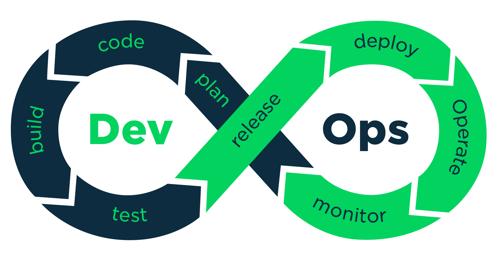
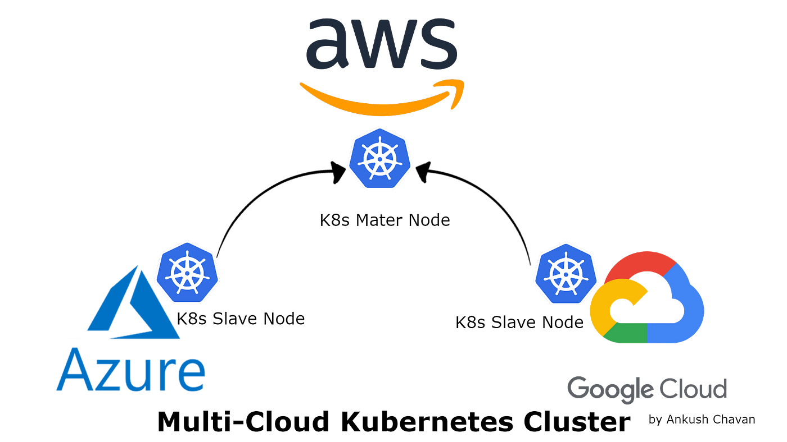

Woir
EXCEL UP YOUR GRADES
Join the world of Intellectual resources with an entire range of premium products developed by WOIR

DevOps
Our expertise in DevOps area includes cluster management, big data solution deployments

Clouds
Azure Google Digital Oceans Amazon Web Services(AWS)
Network
We are experts in setting up the Micro Services and Rest API’s.

Analytics
We do analyzing raw data in order to make conclusions about that information.